나의 Claude Code를 팀의 플랫폼으로 (2026.11, Claude Code v2.1.319, Bedrock 기준)
Huh, Jinsung
Sr. Solutions Architect
AWS Korea
사전 설문 결과로 정한 이 챕터의 목표
참가 확정자 142명 중 60명이 팀 표준화(설정, 권한, 훅, MCP)를 기대 주제로 골랐습니다.
이 챕터에서 그 표준을 플러그인 하나로 묶어 배포합니다.
기대 주제 2위, 복수 선택 문항
개인 설정에서 팀의 플랫폼까지
Plugins & Mods로 스킬, Subagent, 훅, MCP, mod를 한 번에 배포합니다.
팀의 작업 방식을 묶어 배포하는 단위
무엇을 넣을지는 언제, 누가, 무엇을 바꾸는가로 선택
CLAUDE.md는 managed CLAUDE.md나 저장소로,
나머지 5종은 한 디렉터리에 담아 플러그인으로 배포합니다.
하나를 누르면 언제 쓰는지 나옵니다.
항상 알아야 할 짧은 지침을 둘 때 씁니다.
플러그인이 아니라 managed CLAUDE.md나 저장소로 배포합니다. 매 요청에 실리기 때문에 짧게 유지합니다 (Ch1, Ch5).
같은 지시를 반복할 때 씁니다. 필요할 때만 로드됩니다.
예: 노후 연금 격차 계산 절차 retirement-gap
역할과 도구를 나눠 맡길 때 씁니다.
예: Ch3에서 만든 portfolio-analyst
이벤트에 스크립트로 막거나 기록할 때 씁니다.
예: Ch2의 DLP 훅
외부 시스템에 닿아야 할 때 씁니다.
외부로 나가는 채널이라 반출 채널 검토 대상입니다.
화면, 커맨드, 이벤트 자체를 바꿀 때 씁니다.
Part 3에서 자세히 다룹니다.
플러그인 디렉터리 구성과 각 파일의 역할
점선 두 줄은 이 예시에는 없지만 플러그인에 넣을 수 있는 파일입니다.
파일을 누르면 무엇이 들어가는지 보여 줍니다. Ch2와 Ch3의 결과물을 그대로 넣고, 설치 한 줄로 동료가 같은 환경을 갖습니다.
플러그인의 이름, 버전, 설명. 유일한 필수 파일입니다.
버전으로 변경 이력을 관리합니다.
스킬. 설명만 항상 실리고 본문은 필요할 때 로드됩니다.
예시는 노후 연금 격차를 정해진 절차로 계산하는 retirement-gap입니다.
Subagent. Ch3에서 만든 정의를 그대로 넣습니다. spending-analyst, portfolio-analyst, risk-reviewer 세 개입니다.
Ch3 파일이 없으면 랩 TASK 00에서 키트 기준본으로 채웁니다.
훅을 등록하는 곳. Ch2의 DLP 훅을 여기에 등록합니다.
mod도 같은 hooks/ 아래에 들어가고, 경로는 ${CLAUDE_PLUGIN_ROOT}를 씁니다.
훅이 실행하는 검사 스크립트입니다.
슬래시 커맨드. 스킬로 대체되는 추세입니다.
MCP 서버 정의. 외부로 나가는 길이라 반출 채널 검토 대상입니다 (Ch2).
마켓플레이스에서 동료의 세션까지 플러그인이 가는 길
설치를 강제하고 출처를 제한한다
managed-settings.json 네 개 키로 사내 마켓플레이스를 강제
QUICK CHECK, 손을 들어 답해 주세요
strictKnownMarketplaces 허용 목록만 설정하면 --plugin-dir 로컬 로드는?
정답 B. 사이드로드는 disableSideloadFlags로만 막습니다.
망분리와 CI는 CLAUDE_CODE_PLUGIN_SEED_DIR
배포 후 측정, OTel 이벤트 두 개와 이름 가림
무엇이 설치되고 쓰이는지 OTel로 봅니다. 카드를 누르면 각 이벤트가 답하는 질문이 나옵니다.
설치할 때마다 기록됩니다. 누가 설치했는지 답합니다.
세션이 시작될 때 켜진 플러그인이 기록됩니다. 설치만 하고 안 쓰는지, 실제로 쓰이는지 답합니다.
배포 전 체크리스트의 측정 항목도 이 이벤트입니다.
서드파티 플러그인 이름은 기본으로 가려지고, OTEL_LOG_TOOL_DETAILS=1일 때만 표시됩니다.
Claude Code를 내 손에 맞게 바꾸는 방법
화면을 바꾸고, 명령어를 만들고, 동작에 끼어듭니다. 설정으로 고르는 것이 아니라, Claude Code 자체를 내 방식대로 고쳐 쓰는 방법입니다.
화면, 커맨드, 동작, 모양
네 가지를 눌러 봅니다. 스킬과 MCP가 Claude가 아는 것과 쓰는 도구를 바꾼다면, mod는 Claude Code 프로그램 자체를 바꿉니다.
/replay, /tool-calls.env 파일 편집 막기, 실패한 명령을 상태 줄에 표시Claude Code 화면에서 mod가 그릴 수 있는 자리
> 연금 격차 계산 테스트 돌려 줘
✻ 실행하는 중…
점선으로 표시한 곳이 mod가 그릴 수 있는 자리입니다.
영역을 누르거나 ↓ 키로 하나씩 봅니다.
채팅 옆에 붙어 계속 갱신되는 화면입니다.
예: 바뀐 파일 목록, 도구 호출 기록
$.ui.open({ id, title })
도구가 실행되는 줄의 위아래에 내용을 덧붙입니다.
예: 명령 아래에 예상 시간, 영향 범위
ui.render { component: 'ToolUse' }
입력창 바로 위의 한 줄입니다. 버튼도 둘 수 있습니다.
예: 지난 턴에 걸린 시간, 컨텍스트 사용량
ui.render { component: 'AbovePrompt' }
가장 간단한 표시. 글자 한 줄을 올리고 지웁니다.
예: 도구 호출 수, 실패한 명령
$.ui.status(text)
잠깐 떴다 사라지는 알림입니다.
예: 턴이 오래 걸릴 때, 작업이 끝났을 때
$.ui.toast(text)
화면 예시는 설명용 그림입니다. 권한 프롬프트 화면은 mod가 바꿀 수 없습니다.
화면을 바꾸는 mod, 컨텍스트 창 일기예보
프롬프트 위에 컨텍스트 사용량을 날씨로 보여 줍니다. 세 샘플 중 가장 작은 mod입니다.
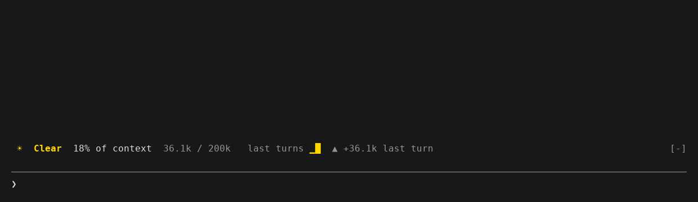
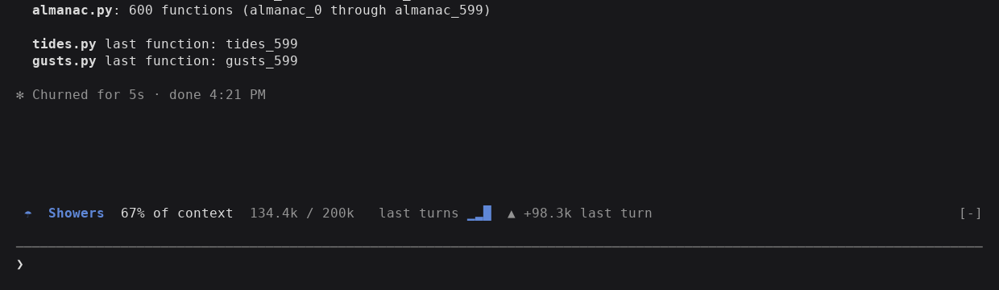
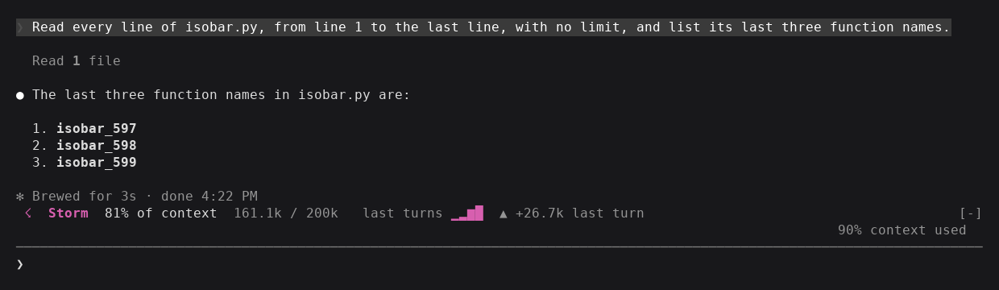
첫 턴이 끝난 직후. 사용량, 토큰 수, 지난 턴들의 막대 그래프가 프롬프트 바로 위 한 줄에 나옵니다.
파일을 많이 읽은 뒤. 날씨가 Showers로 바뀌고, 지난 턴에 98.3k가 늘었다고 알려 줍니다.
75%를 넘으면 Storm, 90%부터는 Compact soon. 정리할 때를 화면이 먼저 알려 줍니다.
쓰인 것: turn.complete, AbovePrompt
화면 출처: github.com/anthropics/claude-code-playground (Apache-2.0). 공식 지원 대상은 아닌 샘플입니다.
동작에 끼어드는 mod, 위험한 명령 붙잡기
rm -rf, git reset --hard, force push 같은 명령을 실행 전에 멈추고 영향 범위를 보여 줍니다.
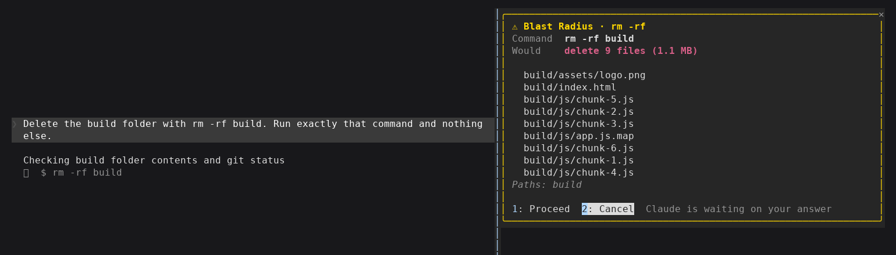
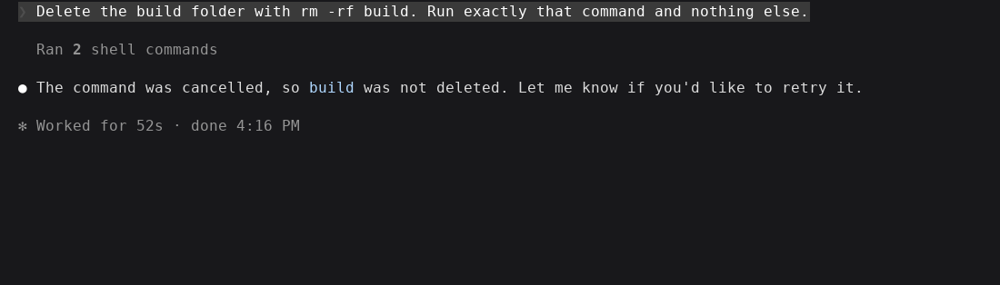
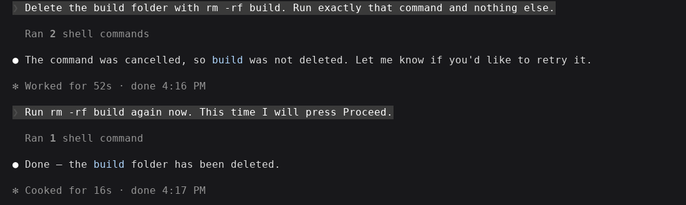
rm -rf build가 멈췄습니다. 옆 패널에 지워질 파일 9개, 1.1MB와 Proceed, Cancel 버튼이 뜹니다.
취소하면 명령은 실행되지 않고, Claude도 거절된 이유를 전달받아 지우지 않았다고 답합니다.
다시 시도해 Proceed를 누르면 그대로 실행됩니다.
쓰인 것: tool.call을 붙잡고 { deny } 또는 next(e), Pane
화면 출처: github.com/anthropics/claude-code-playground (Apache-2.0). 공식 지원 대상은 아닌 샘플입니다.
커맨드와 패널을 만드는 mod, 지난 턴 다시 보기
지난 턴에 Claude가 고친 파일을 한 번에 하나씩 넘겨 봅니다. 지켜보기만 하고 편집은 건드리지 않습니다.
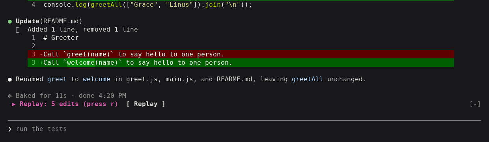
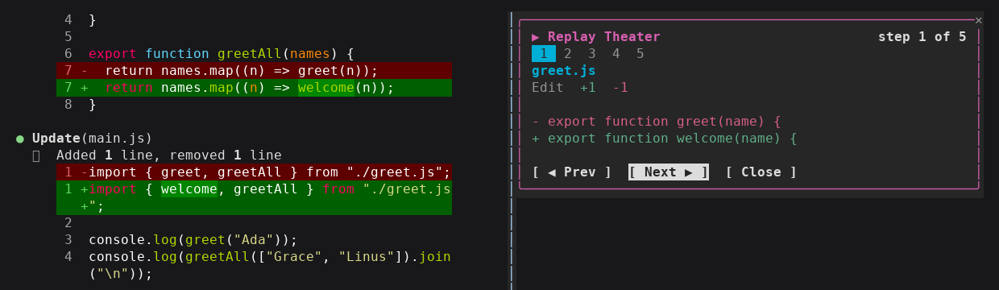
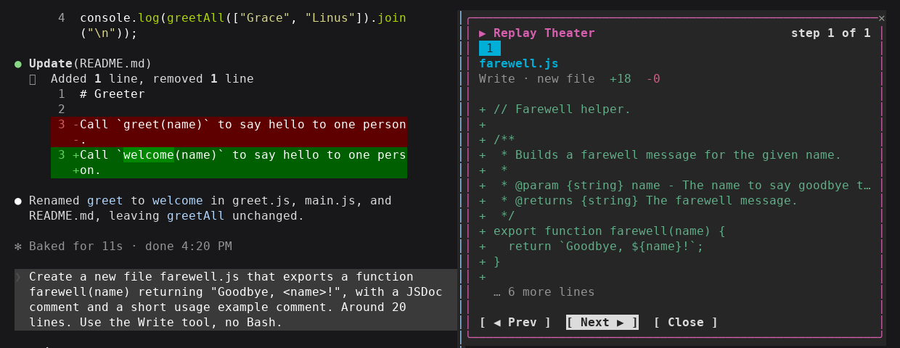
프롬프트 위에 Replay: 5 edits 안내와 버튼이 나타납니다. /replay 커맨드로도 엽니다.
옆 패널에 step 1 of 5. 파일 이름, 더하고 뺀 줄 수, 짧은 diff와 Prev, Next, Close 버튼이 있습니다.
새로 만든 파일은 Write 단계로 나오고, 내용은 12줄까지만 보여 줍니다.
쓰인 것: $.command.register, Pane과 Button
화면 출처: github.com/anthropics/claude-code-playground (Apache-2.0). 공식 지원 대상은 아닌 샘플입니다.
입력부터 답변까지, 일이 일어날 때마다 mod가 불립니다
mod는 정해진 순간에 불리는 코드입니다. 순간을 하나씩 눌러, 그때 mod가 무엇을 할 수 있는지 봅니다. 슬래시 커맨드를 입력하는 순간(command.run)도 같은 방식입니다.
/replay를 등록, token-weather가 첫 측정rm -rf를 붙잡고, replay-theater가 편집을 기록불린 순간에 mod가 고를 수 있는 세 가지 행동
같은 순간이라도 mod마다 하는 일이 다릅니다. 하나씩 눌러 공식 샘플이 어느 쪽인지 봅니다.
조직의 managed 정책(deny 규칙, PreToolUse 차단)과 권한 프롬프트 화면은 mod가 넘거나 바꿀 수 없습니다.
여섯 가지 예시를 실제로 만들어 실행한 화면
도구 호출이 끝날 때마다 폴더를 다시 훑어, 생성되거나 수정된 파일을 옆 패널의 트리에 표시합니다. /files로 패널을 고정합니다.
file-radar · tool.call 지켜보기 + 패널
Claude가 .env를 고치려 하면 막고 이유를 전달합니다. Claude는 우회하지 않고 사람에게 요청하라고 답합니다.
env-guard · tool.call 막기
턴이 끝날 때 걸린 시간을 보고, 오래 걸렸으면 토스트로 알립니다. 데모는 10초 기준입니다.
long-turn · turn.complete + 토스트
사용자가 보낸 프롬프트 끝에 팀 규칙을 자동으로 덧붙여 Claude에게 넘깁니다. 금액 표기와 마지막 줄이 규칙대로 나왔습니다.
team-rules · prompt.submit 바꾸기
/tool-calls를 입력하면 Claude를 거치지 않고 바로 패널이 열려 이번 세션의 도구 호출 기록을 보여 줍니다.
tool-calls · 커맨드 등록 + command.run + 패널
턴이 끝나면 걸린 시간과 도구 호출 수를 프롬프트 위에 표시합니다. 숨기기 버튼이 달려 있습니다.
turn-band · turn.complete + 프롬프트 위 띠
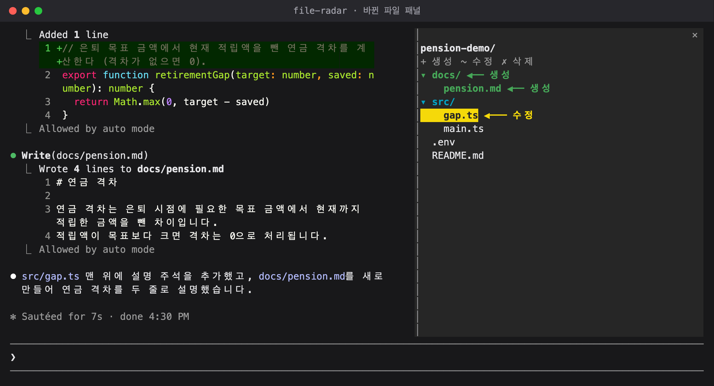
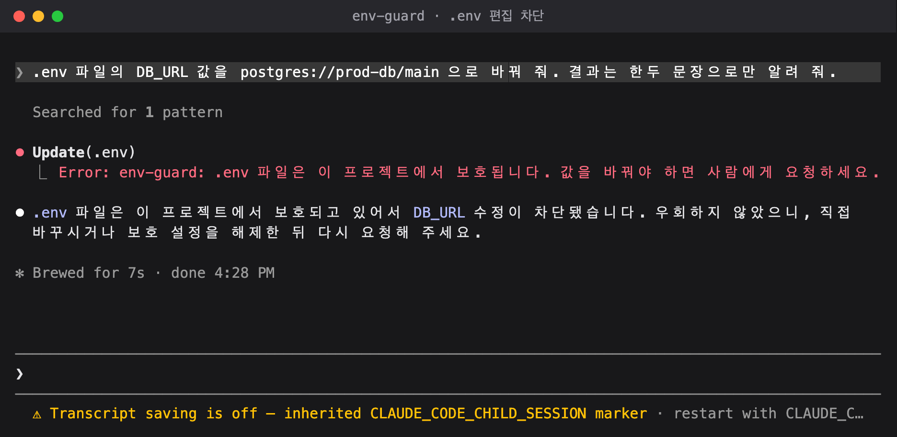
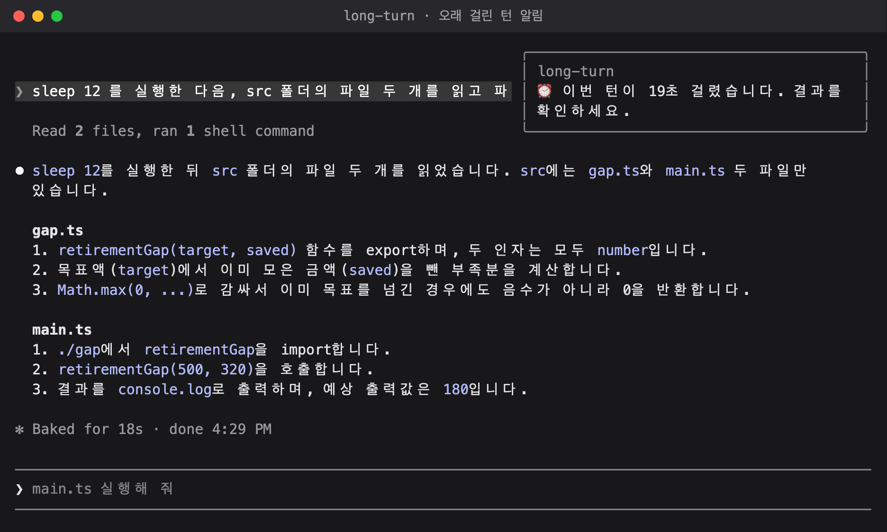
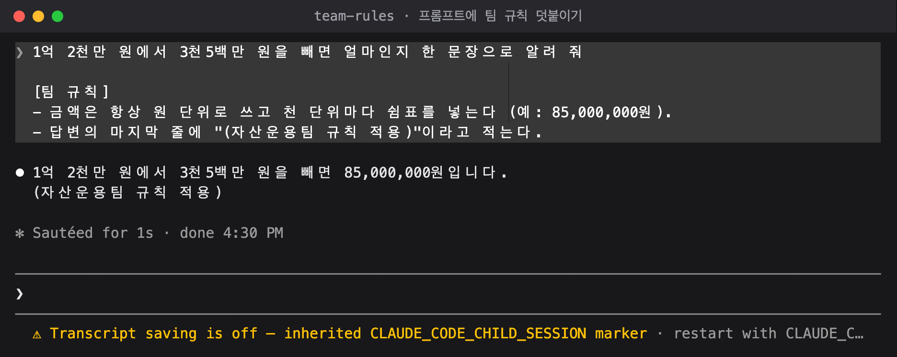
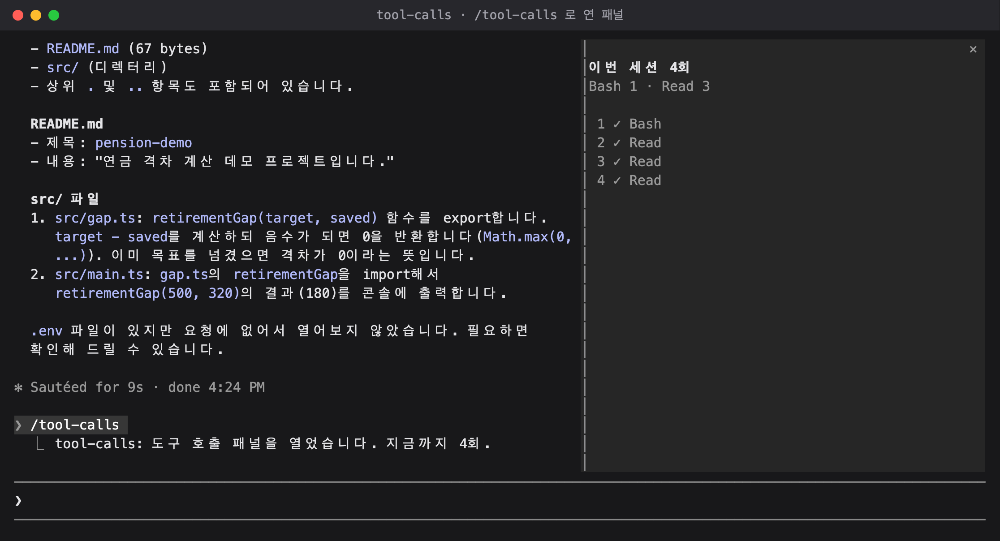
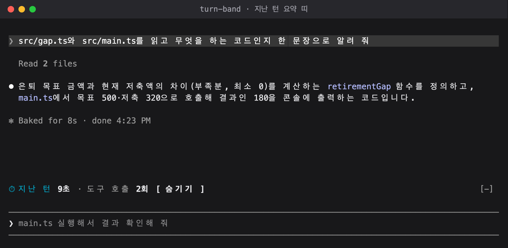
이 장표를 위해 직접 만들어 Claude Code v2.1.325에서 실행한 mod의 실제 화면입니다.
다른 확장 방법과 비교, 바꿀 수 있는 것과 작성 방법
네 가지를 눌러 비교합니다. 화면, 즉시 커맨드, 이벤트 자체를 바꿔야 할 때 mod를 고르고, 다른 수단으로 되는 일은 그쪽이 더 간단합니다.
저장소를 받아 한 세션만 실어 보거나, 설치해서 계속 쓰기
git clone https://github.com/anthropics/claude-code-playground.git저장소cd claude-code-playground/claude-code/modsclaude --plugin-dir ./token-weather체험claude plugin marketplace add ./claude plugin install token-weather@claude-code-playground-mods --scope user설치설치는 곧 신뢰. mod는 내 권한으로 실행되는 코드입니다. 조직 PC에서는 Part 2의 정책(사이드로드 금지, 조직 mod만 허용)으로 막혀 있을 수 있습니다.
다음은 점심, 그리고 Chapter 5. 비용 효율적으로 쓰기입니다. 질문은 Slack #20261116-claude-code-workshop-for-fsi 채널에서 언제든 받습니다.